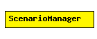

File: World/ScenarioManager.ned
C++ definition: click here
ScenarioManager is for setting up and controlling simulation experiments. You can schedule certain events to take place at specified times, like changing a parameter value, changing the bit error rate of a connection, removing or adding connections, removing or adding routes in a routing table, etc, so that you can observe the transient behaviour.
ScenarioManager executes a script specified in XML. It has a few built-in commands, while other commands are dispatched to be carried out by given simple modules. (The C++ class of these simple modules' needs to implement the IScriptable interface, and the processCommand() method must be redefined accordingly).
An example script:
<scenario>
<set-param t="10" module="host[1].mobility" par="speed" value="5"/>
<set-param t="20" module="host[1].mobility" par="speed" value="30"/>
<at t="50">
<set-param module="host[2].mobility" par="speed" value="10"/>
<set-param module="host[3].mobility" par="speed" value="10"/>
</at>
</scenario>
Built-in commands: <set-param>, <set-channel-attr>, <at>.
All commands have a t attribute which carries the simulation time at which the command has to be carried out. You can group several commands to be carried out at the same simulation time using <at>, and then only the <at> command is needed to have a t attribute.
Supported attributes:
The following diagram shows usage relationships between modules, networks and channels. Unresolved module (and channel) types are missing from the diagram. Click here to see the full picture.
| Name | Type | Description |
|---|---|---|
| script | xml |
simple ScenarioManager parameters: script: xml; endsimple